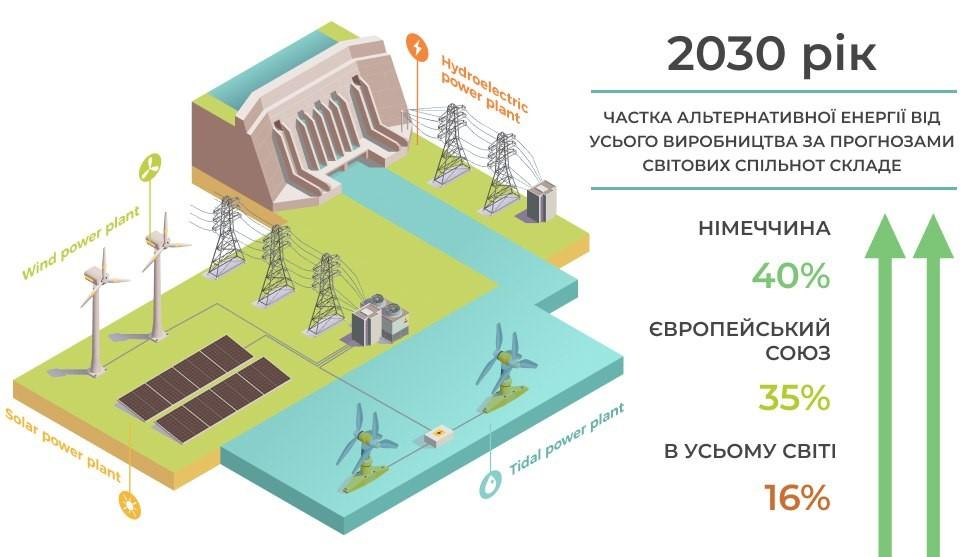

Перечинський лісохімічний комбінат з думкою про майбутнє: перехід на альтернативні джерела енергії як необхідність збереження планети

Світ довкола нас змінюється з неймовірною швидкістю: розвиваються технології, з’являються нові наукові відкриття, виробники приходять до висновку, що екологічність виробництва, пошук альтернативних джерел енергії - це не просто “фішка”, модний тренд чи принципова позиція власника, а необхідна умова збереження планети для наступних поколінь.
Світова спільнота переходить на альтернативні джерела енергії: майбутнє вже настало! А що в Україні?
Передові світові виробники промислової продукції намагаються сповна використовувати енергію сонця, вітру й води, біогазів і вторинних енергетичних ресурсів, хвиль й припливів, газу з органічних відходів та каналізаційно-очисних станцій й т.д. - все задля раціонального використання ресурсів та збереження довкілля.
Провідні науковці працюють й над тим, щоб якомога ефективніше використовувати і вторинні енергетичні ресурси - доменний й коксівний гази, метан з вугільних родовищ, скидний енергопотенціал технологічних процесів тощо.
Міжнародне енергетичне агентство прогнозує, що частка альтернативної енергетики складе близько 16% від усього світового виробництва до 2030 року, Європейський галузевий союз відновлюваних джерел енергії називає ще більшу цифру - до 35%. Провідні фахівці стверджують: за альтернативними джерелами енергії - майбутнє людства!
У Німеччині, одній з країн-лідерів по використанню альтернативних джерел енергії, частка поновлювальної енергетики може скласти 40 %, а у виробництві електричної - близько 67%, передбачає Федеральний союз поновлюваних джерел.
Минулого року і на базі Перечинського лісохімічного комбінату було засновано науково-дослідну лабораторію для пошуку та використання альтернативних джерел енергії.
Співпраця Перечинського лісохімічного комбінату з Технологічним інститутом Карлсруе
У грудні 2019 року на базі комбінату розпочала роботу науково-дослідна лабораторія, де фахівці ПЛХК спільно з співробітниками знаного у Європі Технологічного університету Карлсруе (Німеччина) працюють над вкрай важливими завданнями, зокрема:
- технологією отримання додаткової енергії з відходів виробництва деревного вугілля. Її планується направляти не лише на потреби виробництва, а й створення нової продукції;
- технологією отримання з деревини корисних хімічних сполук природним способом. Йдеться, в основному, про вилучення таких сполук з піролізних газів. І це провідна світова тенденція!
На підприємстві щиро пишаються тим, що роблять вклад у захист довкілля разом з найстарішим технологічним вишем Німеччини - безумовним авторитетом у справі екологічності виробництва.
Перечинський лісохімічний комбінат йде в ногу з часом: визнання клієнтів та фахівців-екологів
Дотримання найвищих стандартів якості і екологічних принципів виробництва зробило Перечинський лісохімічний комбінат надійним партнером великих зарубіжних підприємств - найбільших у Європі заводів з виробництва активованого вугілля, світових лідерів з виробництва кремнію.
Також продукцію можна знайти у найбільших європейських торгівельних мережах - LIDL, Kaufland, Carrefour, EDEKA, TESCO. Комбінат працює за стандартами BSCI, PEFC, ISO.
Сучасні способи промислового виробництва вугілля на Перечинському лісохімічному комбінаті: коли екологічність - це аксіома!
У виробництві деревного вугілля ТДВ “Перечинський лісохімічний комбінат” використовує виключно паливні дрова. Уся сировина сертифікована належним чином.
Сам процес виробництва відбувається у двох вертикальних ретортах і він повністю автоматизований. Це дозволяє фахівцям ретельно контролювати хімічні показники - вміст золи, вологість, вміст летючих речовин і т.д.
Причому процес має замкнутий цикл: органічні сполуки, утворені в результаті згорання, утилізуються в спеціальному котлі, надаючи необхідну для виробництва енергію. Тобто, виробництво не лише не забруднює навколишнє середовище, а й саме себе забезпечує необхідним енергетичним ресурсом.
Такий вектор розвитку обраний зовсім не для визнання міжнародними експертами й не в гонитві за світовими трендами, а з думкою про майбутні покоління та збереження екології в глобальному масштабі.